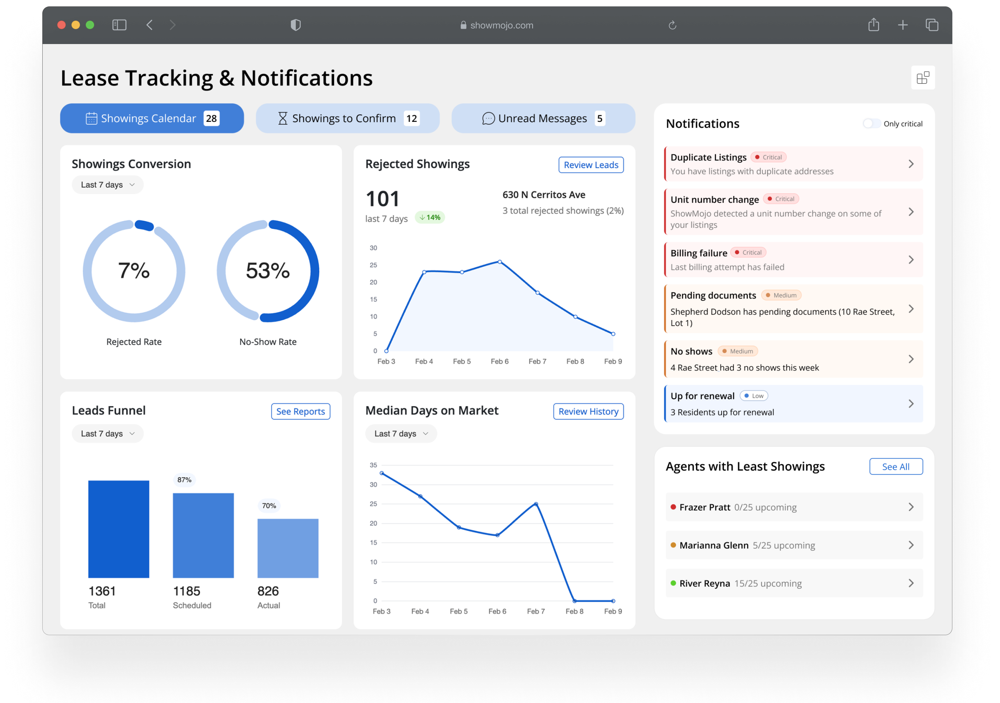

Dashboard Redesign
The existing interface made it hard for users to understand what needed their attention. I led the design of a new dashboard that highlighted critical issues and next steps, analyzed real user behavior and product metrics for current UI, ran several design iterations based on feedback, and created an action-oriented interface that helped customers act faster and with more confidence.
- Data visualization
- UX research
- Figma
- Design systems
- Prototyping
- JavaScript
- SCSS
